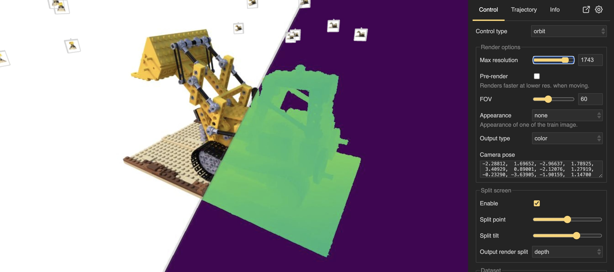

Viewer¶
NerfBaselines viewer. The viewer enables users to visualize the trained models, input datasets, generate camera trajectories, and render videos. The viewer runs a HTTP webpage which can be accessed from the web browser or used inside a Jupyter Notebook.¶
Getting started¶
The viewer runs a HTTP webpage which can be accessed from the web browser. The intended use case is to launch the viewer on the machine with the GPU used for fast training/rendering, and open the viewer either locally (if running on the same machine), or remotely (if running on remote machine, e.g. a cluster). To start the viewer, run the following command:
nerfbaselines viewer --checkpoint <checkpoint> --data <data>
where <checkpoint> is the path to the directory with the trained model checkpoint and <data> is the path to the dataset directory. You can specify either only --checkpoint or only --data or both (recommended). By default, the viewer will run on port 6006, but it can be changed by using the --port argument.
Camera control¶
Currently, there are two camera control options implemented ():
orbit- the camera will orbit around a single point called target.free- FPS-style camera control where moving mouse will rotate the camera around its center.
For both modes, camera movement is activated by pressing down the left mouse button and moving the mouse (or pressing the touch pad). Moving two fingers (without pressing) down/up will zoom-in/zoom-out (move camera forward/backward in the direction it is looking). The same can be achieved by using the mouse wheel. Two-finger press gesture will result in panning motion (moving the camera in the plane perpendicular to the look-at direction). Note, the sensitivity can by changed in the Settings tab.
Keyboard can also be used for the movement. W, S, A, D move across the plane perpendicular to the up direction. Q, E move up and down. The arrow keys ←, →, ↑, ↓ move the camera in the plane perpendicular to the look-at direction (panning). If any of keys Ctrl, Shift, Alt are pressed, the arrow keys will rotate the camera instead of panning. Keys Z, X will rotate the camera around the look-at direction (changing the camera-up vector). The sensitivity can be changed in the .
Connecting to the viewer remotely¶
If you want to run the viewer on a remote machine, e.g. a cluster, you can launch the viewer from there, and forward the appropriate port to connect to the viewer server from the web browser. In case SSH connection to the remote server is possible, connecting to the remote viewer could be establishing an SSH tunnel (we assume the viewer was ran on port 6006):
ssh -L 6006:localhost:6006 <user>@<host>
By pressing Setup public url, the public url will be generated and shown in the public url box.¶
However, other cases (SSH not available or is difficult to setup), NerfBaselines enables you
to setup a proxy server to make the server publicly available from anywhere.
The viewer will generate a public url which can be inputted into the web browser directly.
Go to and the public url will appear in the public url box above the
Setup public url button. NerfBaselines will download and install cloudflared to setup the proxy.
You will be requested to accept Cloudflare’s terms and conditions before proceeding and
after accepting, the tunnel will be set up. It can take around 20 seconds to setup the tunnel.
A notification in the notification are will keep you informed about the current status.
After the public url is generated, it can be copied to clipboard by pressing the Copy public url button
in the Settings tab.
Viewing dataset¶
Viewer interface with dataset visualization. In the section, you can select to visualize the train or test dataset cameras and the point cloud. Each camera is represented by a clickable pyramid which upon clicking will display the camera details in the control panel.¶
Camera details are displayed in the control panel after clicking on the camera pyramid. The details include the camera parameters, image, etc.¶
The dataset (cameras and point cloud) can be visualized by the NerfBaselines viewer. In the section, you can select to visualize the train or test dataset cameras and the point cloud. After selecting any of the options, the dataset will be downloaded and visualized. A notification with a progress bar will appear in the notification area, keeping you informed about the current status. After the cameras are downloaded, they will appear in the viewer. Each camera is represented by a pyramid with the camera position at the apex and the camera orientation at the base. By clicking on the camera, the camera will be selected and details will be displayed in the control panel. The details include the camera pose and intrinsics, the image filename, and the image itself. There is also a Navigate button which will move the camera to the center of the view. The point cloud will be visualized as a set of points, where the size of the points can be adjusted ().
Creating camera trajectories¶
Camera trajectory editor. Keyframes can be added by pressing Add keyframe. The keyframe appear both in a list of keyframe and in the viewer window. By clicking on the keyframe, the keyframe becomes selected and can be edited. The camera trajectory can be previewed by pressing Preview trajectory and Play.¶
The camera trajectory can be created by adding keyframes. Keyframes can be added by pressing the Add keyframe button. After adding the keyframe, it will appear in the list and also in the viewer window as a camera frustum. By clicking on the keyframe, the keyframe becomes selected and can be edited. A window will appear with keyframe properties including fov, velocity, appearance, etc. In the viewer window, the selected keyframe can be moved and rotated by dragging the rotation and translation handles. In the list, the keyframes can be reordered by dragging them up and down. They can be deleted by pressing the icon, duplicated by pressing the button, or moved up and down by pressing the and buttons.
The camera trajectory can be previewed in the panel. By pressing the Preview render button, the viewer will enter preview mode, where it will render the scene from the camera position at a fixed time (Preview frame) and it will use selected aspect ratio, fov, and other properties. By dragging the Preview frame slider, the camera trajectory can be inspected frame by frame as it will appear in the final video. The camera trajectory can be played by pressing the Play button.
Camera trajectory interpolation. The keyframes are interpolated to obtain a smooth trajectory. The interpolation method can be set in the dropdown.¶
After adding the keyframes, they are interplated to obtain a smooth trajectory. There are different options on how the keyframes are interpolated ():
linear- linear interpolation between the keyframes.kochanek-bartels- Kochanek-Bartels spline interpolation. This method allows for more control over the interpolation by setting the tension, bias, and continuity parameters. The tension parameter controls the tightness of the curve, the bias parameter controls the direction of the curve, and the continuity parameter controls the smoothness of the curve.circle- circular interpolation. A best-fit circle is found for the keyframes and the camera is moved along the circle.none- no interpolation. The keyframes are treated as individual images. See Rendering individual images.
There are two modes of how the transition times are computed (Speed interpolation):
velocity- first, the distance of all trajectory segment is computed. The distance is exponentiated to the power of Distance alpha. A base velocity is set at 1, but at each keyframe it can be overriden. After that, the velocity is interpolated using Piecewise Cubic Hermite Interpolating Polynomial (PCHIP) and the transition times are computed by integrating and normalizing the interpolated velocity. By changing the value of Distance alpha, you can choose to put more emphasis on the longer or shorter segments.time- the transition times are set manually by the user. The default transition duration can be set in the input. The transition duration can be set for each keyframe individually. The transition duration is the time it takes to move from the current keyframe to the next keyframe (in seconds). Piecewise Cubic Hermite Interpolating Polynomial (PCHIP) is used to smooth over sharp changes in transition duration between keyframes. In this mode, the Distance alpha parameter is used inkochanek-bartelsinterpolation to ensure smooth trajectory (putting more weight on longer segments). Finally, there is the Loop option which will make the camera trajectory loop back to the first keyframe after reaching the last keyframe.
Rendering individual images¶
Instead of creating a smooth trajectory, the tab can be used to create a sequence of images from manually placed cameras to be later exported as individual images (see Rendering video).
This can be done by setting Interpolation to none. In this mode, the keyframes will not be interpolated, but treated as individual images. Notice, that after selecting this option, the Transition duration and FPS options are still visible. They will be used when generating a video from the images (see Rendering video).
Exporting/loading camera trajectories¶
After creating a camera trajectory, it can be exported to a json file to be loaded later or to be used with nerfbaselines render-trajectory command. The camera trajectory can be exported by pressing the Export trajectory button in the tab. Later, the trajectory can be loaded by pressing the Load trajectory button in the same tab.
Rendering video¶
After you create a camera trajectory and are satisfied with the result (you can preview the video by pressing the Preview render button and pressing Play), you can render the video by pressing the Render video button. A save-as dialog will pop up and after selecting a file, the video will start rendering in the background and a notification will appear in the notification area with the progress bar. After the video is rendered, it will be downloaded to the location selected in the save-as dialog. The export resolution can be set by changing the value of input. The output video can be saved as either a mp4, a webm, or a sequence of png images which will be zipped. You can also set the number of frames per second in the input, or the total duration of the video in the input. You can also specify which output type will be rendered (color, depth, etc.) in the input. Detailed export settings including codec, etc. can be set in the tab.
The codec string is has the following format:
codec[;option1=value1;option2=value2;...]
For detailed information about the codec string, see Web Codecs documentation. The options can include the following:
bps- bitrate in bits per second.bppf- bitrate per frame in bits per pixel.bps = bppf * width * height * fps.crf- constant rate factor. When specified,bpsandbppfare ignored. The values are in the range 0-51, where 0 is best and 51 is the worst quality. For some codecs, the max value is 63. Recommended default value is 23. See VideoEncoder.encode.
Implementation details¶
The viewer is implemented in the nerfbaselines.viewer.Viewer class.
The class spawns a background process which handles the HTTP requests and communicates with the connected browser clients.
The background process launches a simple HTTP server (using the http.server module) which serves the static files (HTML, JS, CSS) and handles the WebSocket connections (custom lightweight implementation). Each time a connected browser client wants to render a frame,
its sends a message to the server using the WebSocket connection. The viewer background process then adds the request to a queue called request_queue and waits for a corresponding message to appear in the output_queue containing the rendered frame. The rendering itself is, therefore, not done in the background process, but in the main process. The main motivation is to avoid overhead with locking (when simultaneously rendering and training) and to give full control to the users over the rendering process. To handle the actual rendering, users must periodically call Viewer.update() which will check the request_queue and handle a single request if it is present (taking a single message from the request_queue and putting the rendered frame into the output_queue).
For convenience, the Viewer class also provides a method Viewer.run() which will periodically call Viewer.update() until the viewer is closed.
Using Jupyter Notebook or Google Colab¶
The viewer is implemented in the nerfbaselines.viewer.Viewer class. The class
is a context manager and it has to be entered first (which spawns the background process handling HTTP requests).
In this tutorial, we will make use of contextlib.ExitStack to open the context manager across different
Notebook cells. After the viewer is created, we will call viewer.show_in_notebook which opens an iframe containing
the viewer. There is also a button to open the viewer in a new tab.
from contextlib import ExitStack
from nerfbaselines.datasets import load_dataset
# We will use ExitStack to keep context open across multiple cells
stack = ExitStack()
# Model can be None (in that case we will only visualize dataset)
model = None
# Create the train and test datasets. Note, that we do not need
# to load the features, as the images will be automatically loaded
# and cached when they are required by the viewer in the background
# process. This speeds up the viewer load time.
train_dataset = load_dataset("external://blender/lego", split="train", load_features=False)
test_dataset = load_dataset("external://blender/lego", split="train", load_features=False)
# First, we prepare the method to render. In this example, we load an existing
# checkpoint from the official nerfbaselines repository. However, this requires
# the method to be installed, so we skip it to save time. If you want to see the actual rendering,
# Please run this cell (it can take long time to install the backend on the first run).
# However, you can also skip this cell and only visualize the dataset.
from nerfbaselines import load_checkpoint
if 'google.colab' in str(get_ipython()):
# Install conda to google colab
!pip install -q condacolab
import condacolab
condacolab.install()
!nerfbaselines install --method gsplat --backend conda
# Load the checkpoint
checkpoint = "https://huggingface.co/nerfbaselines/nerfbaselines/resolve/main/gsplat/blender/lego.zip/checkpoint"
model, nb_info = stack.enter_context(load_checkpoint(checkpoint, backend="conda"))
from nerfbaselines.viewer import Viewer
# Initialize the viewer
viewer = stack.enter_context(Viewer(
train_dataset=train_dataset,
test_dataset=test_dataset,
model=model))
# The `show_in_notebook` function opens the iframe inside jupyter/colab.
# After running the function, the viewer will already be visible,
# But it will not be able to render the images yet. In order,
# to handle the rendering requests, we need to call `viewer.run()`
viewer.show_in_notebook()
# Finally, we run `viewer.run()` which waits in loop for new render requests
# and handles them. We recommend to call the function in a separate cell
# as it can be stopped without stopping the viewer itself. This is useful
viewer.run()
